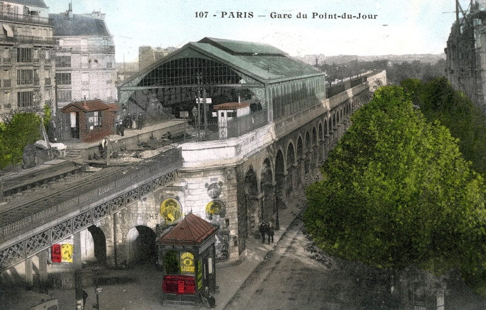

Quelques jours à peine après son coup d’Etat, Louis-Napoléon Bonaparte signe le décret donnant naissance à la Petite Ceinture ferroviaire de Paris.
Ouverture de la 1e section de la Petite Ceinture Rive Droite, entre les Batignolles et La Chapelle. Seuls des trains de marchandises arpentent la nouvelle ligne.
Inauguration de la Ligne d'Auteuil, qui relie la gare Saint-Lazare à la gare d'Auteuil-Boulogne Il s'agit de la toute première ligne de transports de passagers de Paris.
Ouverture de la Petite Ceinture Rive Gauche. Elle relie les gares d'Auteuil-Boulogne et de La Râpée-Bercy en traversant tout le Sud de Paris. Pour traverser la Seine, la Compagnie de l'Ouest construit le pont-viaduc du Point-du-Jour, un superbe ouvrage de 175 mètres de long.
L'année 1900 marque l'apogée du service voyageur de la Petite Ceinture. Grâce à l'Exposition universelle, plus de 39 millions de voyageurs empruntent la ligne.
Après un demi-siècle de débats entre la Ville de Paris, l'Etat et les compagnies de chemin de fer, le métropolitain de Paris voit le jour le 1er juillet 1900.
Suppression du service de voyageurs de la Petite Ceinture. Il est remplacé par le « bus PC ». La ligne continue d'être arpentée par les trains de marchandises et les trains de jonction.
Laissées en friche, les infrastructures sont aujourd'hui envahies par la végétation, ce qui donne à la ligne une atmosphère particulière et a permis le développement d'une biodiversité unique à Paris. Si son accès demeure théoriquement interdit, la Petite Ceinture est particulièrement prisée des amateurs d'exploration urbaine. Elle accueille aussi quelques manifestations culturelles. La question de sa réouverture ou de sa reconversion en voie verte nourrit régulièrement les débats politiques parisiens. Depuis 2007 et après accord de la SNCF, propriétaire de l'infrastructure, la municipalité transforme certaines portions en coulées vertes provisoires. Le maintien de la plateforme permet toutefois une future réouverture au trafic des voyageurs.